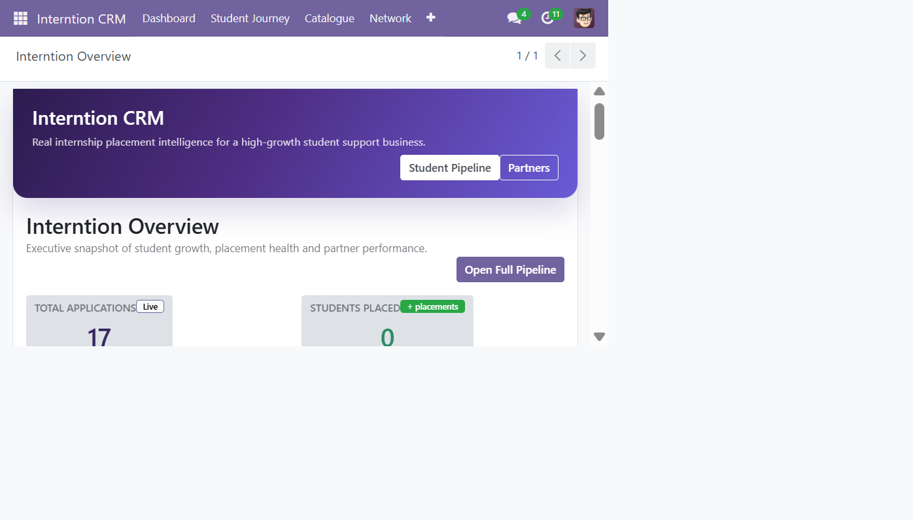

A complete guide to the Odoo CRM for managing student internship placements, corporate partnerships, mentoring, support, catalogue services, and operational accountability.
This document starts with the business problem, then explains the system architecture, screens, data models, code behavior, and operations. It is written for a reader who is new to Odoo and to this project.
Interntion helps students access paid internships and career support. The CRM converts that real service journey into a controlled process. Without it, applications, employer conversations, CV reviews, mentor assignments, and urgent support requests would be scattered across spreadsheets, email, and chat.
| Business need | CRM capability | Why it is required |
|---|---|---|
| Keep every student application visible | Extended crm.lead placement pipeline | Provides one owner, one status, and an auditable journey for each student. |
| Match students to real opportunities | Internship and employer catalogues linked to applications | Prevents duplicate data entry and makes capacity, employer, sector, and placement status visible. |
| Respond quickly to students and partners | SLA deadlines, activities, and escalation monitor | Protects service quality: student matching is tracked over seven days; partner response is tracked over 24 hours. |
| Make management decisions quickly | Live KPI dashboard with drill-down actions | Every dashboard number opens the underlying records instead of becoming a static report. |
| Handle operational issues | Placement Support tickets | Records student, partner, or mentor issues with priority, owner, state, discussion history, and follow-up activities. |
The module is declared as an installable Odoo Sales/CRM application in addons/interntion_crm/__manifest__.py. Its dependencies deliberately reuse Odoo capabilities rather than rebuild them: crm provides leads and pipelines, mail provides chatter and activities, sale_management provides quotations, product supports sellable add-ons, and contacts supports contact relationships.
Odoo is an ERP platform. A custom Odoo module does not need to write login, forms, database persistence, permissions, filters, messaging, or navigation from zero. Python model classes define business objects and behavior; XML defines screens, actions, menus, security, and seed records; PostgreSQL stores the data.
docker-compose.yml starts repeatable containers for Odoo and PostgreSQL. Docker is required here because it gives every developer the same server and database versions without installing them directly on Windows.
| Component | What it does | Why it is present |
|---|---|---|
db service | Runs PostgreSQL 15 with a persistent named volume. | Odoo requires a relational database. The volume keeps CRM records when the container restarts. |
odoo service | Runs Odoo, exposes port 8069, and mounts ./addons. | The mount lets Python/XML changes be available to Odoo without rebuilding the application image. |
Health check and depends_on | Waits for PostgreSQL readiness before Odoo starts. | Avoids Odoo booting while the database is unavailable. |
Optional pgadmin | Database administration UI on port 5050. | Useful for authorised diagnostics; it is excluded unless the tools profile is started. |
odoo.conf | Configures add-on paths, database host, credentials, logging, and proxy behavior. | Separates environment configuration from business code. |
19.0.2 and the Compose image is specified as odoo:19.0. The most recent local Odoo server log identified itself as 17.0-20260630. Before production rollout, verify the image actually running with docker compose images and pin the intended Odoo 19 image digest. This is an environment verification point, not a change made by this document.
Figure 1. Live Interntion CRM dashboard captured from the local Odoo application.
| Screen area | What it shows | Why it was implemented |
|---|---|---|
| Top navigation | Dashboard, Student Journey, Catalogue, Network, and support access. | Groups daily work by purpose so staff can navigate with fewer decisions. |
| Header actions | Student Pipeline and Partners. | Gives executives direct access to the two primary operational processes. |
| KPI cards | Total applications, placed students, success rate, industry partners. | Shows the health of demand, outcomes, conversion, and supply network at a glance. |
| Application funnel | New applications through placed cases. | Identifies bottlenecks. Each stage is a button calling a native Odoo action with a stage-specific domain. |
| Growth health | Open roles, active mentors, at-risk cases, and student SLA rate. | Shows operational capacity and potential service failures, not only sales volume. |
| Help & support | Open and urgent support-ticket counts plus Request Help. | Makes escalations available from the command screen; it opens the existing support-ticket form. |
ir.actions.act_window dictionaries. Odoo then opens a filtered kanban/list/form view of real records. This is preferable to a static dashboard because an operational user can move from a warning or metric directly to the cases needing action.The stage records in data/crm_stage_data.xml belong to the Student Placements sales team. Stages make the kanban board useful: a card moves across columns as the real-world work moves forward. Placement Completed is marked as won and folded because it is a completed outcome, while Not Progressing is folded because it is a closed non-success path.
| Important transition | Code behavior | Reason |
|---|---|---|
| Lead enters the system | create() schedules an initial SLA activity. | Every case immediately has an accountable follow-up instead of relying on memory. |
| Matched to Partner | write() records matched_at and sla_completed_at. | Creates a measurable point at which the student matching commitment was fulfilled. |
| Placement Completed | write() schedules an “Issue completion certificate” activity. | Ensures the final service obligation is not lost after a successful placement. |
Partners use a separate team and interntion_side = 'partner'. This distinction is necessary because a student requires career/placement work, while a partner requires relationship, brief, contract, and account-management work. Partner leads receive a 24-hour response SLA because early response strongly affects partner confidence.
In Odoo, a model is a Python class that maps to a database table. Fields define what the business needs to store. Relations such as Many2one create a link to one related record, while One2many provides the reverse collection. The model files are imported by models/__init__.py, which is required so Odoo can register them at startup.
models/crm_lead.py extends, rather than replaces, Odoo’s standard crm.lead. This is the correct approach because it retains Odoo features such as assignment, activities, messages, stage history, reporting, and conversion behavior.
| Field group | Examples | Why it exists |
|---|---|---|
| Student profile | x_course_stream, x_industry_sector, x_application_source | Supports matching, source analysis, and counsellor context. |
| Placement links | x_internship_id, computed x_employer_id, x_mentor_id | Creates one connected record from candidate to role, employer, and mentor. |
| Readiness evidence | x_cv_file, x_cv_reviewed, x_mock_interview_done | Turns preparation work into visible checkpoints rather than unrecorded conversations. |
| Payment/outcome | x_is_paid_internship, x_certificate_issued | Tracks the paid-placement promise and final completion deliverable. |
The internship onchange copies its sector and paid status into the application. This reduces manual entry and prevents a counsellor from accidentally classifying an application differently from the chosen internship.
models/operations.py further extends crm.lead and defines the supporting reference models.
| Model / behavior | Implementation | Why it is required |
|---|---|---|
interntion.support.ticket | Name, linked lead, reporter type, HTML description, priority, state, assignee; inherits mail.thread and mail.activity.mixin. | Separates placement incidents from general CRM notes while retaining a clear owner and escalation history. |
interntion.industry | Reference model with unique indexed code and sequence. | Maintains a controlled, reusable list for target industries and reporting. |
interntion.addon.service | Links an add-on to Odoo product.product. | Lets a lead select additional paid services that can be converted into a real quotation. |
_compute_sla_deadline() | Student: creation + 7 days. Partner: creation + 24 hours. | Encodes the service promise consistently for all cases. |
_compute_sla_status() | Returns on-track, at-risk, or breached. | Surfaces time-sensitive cases before the deadline is missed. |
action_create_addon_quotation() | Creates sale.order and lines from chosen add-ons. | Connects service interest to Odoo Sales instead of retyping charges manually. |
| File and model | Important fields / methods | Business reason |
|---|---|---|
employer.pyinterntion.employer | Sector, contact information, country, account manager, logo, active partner flag, related internships/application counts; actions open its linked records. | Creates one source of truth for the companies supplying placement opportunities. |
internship.pyinterntion.internship | Employer, sector, description, duration, location, paid flag, stipend, positions, application/placed counts. | Represents the actual role a student can be matched to; count fields make role demand visible. |
mentor.pyinterntion.mentor | User, contact details, expertise, photo, active flag, related application count. | Allows workload and specialist availability to be managed rather than assigned informally. |
These models inherit Odoo’s mail.thread and mail.activity.mixin. The first provides chatter/audit messages; the second provides activities and due dates. They are deliberately reused instead of custom messaging code.
| File | Purpose | Why separate from the pipeline |
|---|---|---|
| project.py | Project Assistance catalogue: academic level, category, technology stack, price, deliverables. | Projects are offers/products, not individual student cases. |
| service.py | Four core services with code, description, icon, sequence, website URL, active state. | Maintains consistent service content independent of ongoing opportunities. |
| testimonial.py | Student name, course, role, quote, image, rating, sequence. | Stores curated marketing proof with ordering and publication control. |
| faq.py | Question, HTML answer, category, sequence, active state. | Turns frequently repeated queries into reusable knowledge content. |
models/dashboard.py uses a lightweight interntion.dashboard record to compute management metrics from current business data. It is read-only at the view layer. Its helper _student_stage_domain() builds an Odoo search domain for one or more stage names, allowing one source of filtering logic to serve several funnel buttons.
_compute_kpis() calls search_count() for live counts, calculates success rate as placed ÷ total × 100, and counts active support cases. The action_view_* methods return Odoo actions for total applications, stage queues, placed students, employers, internships, mentors, and the support queue. action_create_support_request() opens a blank support-ticket form with the current user preselected as assignee.
XML views are the user interface layer. They do not replace the model rules; they decide what users see and how they work with it. An ir.actions.act_window action opens a model in a particular view mode and can include a domain filter. A menu item points to an action.
| File | What it defines | Why it matters |
|---|---|---|
views/menu_views.xml | Root application menu and grouped Dashboard, Student Journey, Catalogue, Network, and Brand Content navigation. | Creates a work-oriented information architecture instead of a flat list of technical models. |
views/crm_lead_views.xml | Lead form additions, Student Journey page, custom kanban, custom list, student and partner actions. | Gives counsellors the information needed to work a placement without leaving the opportunity. |
views/dashboard_views.xml | Read-only management dashboard with KPI buttons, funnel, health, priority, support, and service panels. | Provides the operational overview and direct record access described in Figure 1. |
views/interntion_operations_views.xml | Support ticket list/form, reference model views, operations tab on leads, legacy/action menu definitions. | Exposes escalation and operational detail in native Odoo interfaces. |
| Employer, internship, mentor, project, service, testimonial, FAQ view files | List/form/kanban layouts and actions for their corresponding models. | Each entity receives an interface appropriate to its work: browse catalogue, edit detail, or scan pipeline cards. |
The custom lead kanban groups records by stage_id and allows dragging between columns. The cards show the candidate/lead, stage, course, employer, mentor, and related details only when populated. Kanban is used because a placement team needs to see flow and stalled work, not merely a spreadsheet of rows. The tree/list view remains available for filtering, exporting, and dense comparison.
Action contexts set defaults when a user creates a record from an action, for example default_type: 'opportunity' and default_interntion_side: 'student'. XML references such as ref('crm_team_interntion') must be resolved at module-load time through the XML eval attribute. Leaving ref(...) as client-evaluated text causes the browser error “Name ref is not defined”; the corrected operations actions now resolve IDs on the server.
Security is split into groups, record rules, and model access CSV rules. This separation is required because “can a user open this model?” and “which records can the user see?” are different questions.
| Security layer | Where defined | Purpose |
|---|---|---|
| Groups | security/interntion_security.xml | Defines general users, managers, placement counsellors, partnership account managers, mentors, and operations administrators. |
| Record rules | interntion_security.xml | Restricts placement counsellors to Student Placements and partnership managers to Corporate Partnerships. |
| Model access | security/ir.model.access.csv | Defines read/write/create/delete permissions per model and role. |
Managers receive broader CRUD rights because they own configuration and corrections. Regular staff can work operational data but cannot delete it, reducing accidental loss. Marketing-oriented data such as Services, Testimonials, and FAQs is read-only for regular users so approved public content stays controlled.
data/automation_data.xml defines a scheduled job that calls crm.lead.cron_monitor_slas() every hour. The method searches non-won leads, identifies at-risk or breached cases, and schedules an activity only if an equivalent active escalation is not already present. The duplicate check matters: a recurring job must not create an unlimited number of identical alerts.
The same data file defines templates for application receipt, partner acknowledgement, and placement completion. Templates are required for consistent, timely communication; they keep wording and recipient fields centralised rather than manually typed each time.
The Help & Support dashboard panel is intentionally small. It does not try to duplicate a helpdesk product; it gives the operations team two immediate signals (open and urgent) and routes staff to the existing, auditable Odoo ticket form.
When a student opportunity has selected addon_service_ids, the lead form exposes Create Add-on Quotation. The code creates a standard Odoo sales order and one line per add-on. This is required to connect an operational CRM request to formal commercial records, pricing, and later invoicing.
The data/ directory supplies initial records for services, stages, employers, mentors, internships, projects, testimonials, and FAQs. Seed data makes a new database useful immediately and keeps the CRM vocabulary aligned with Interntion’s public offering. It is loaded through the manifest in a deliberate order: reference teams and stages first, catalogue records next, and views/actions afterward.
| Controller endpoint | Result | Why the route exists |
|---|---|---|
/interntion/apply | Creates a student-side CRM lead; accepts CV upload with a 5 MB limit. | Converts a public application into an operational case. |
/interntion/partner-enquiry | Creates a partner-side lead in the corporate partnership team. | Keeps employer enquiries separate from student placement work from the first contact. |
/interntion/express-interest | Creates a student interest lead. | Captures lower-friction interest before a complete application is submitted. |
controllers/website.py uses sudo() when creating leads because website visitors are public users with no regular CRM permissions. It records UTM/source fields where supplied, enabling future marketing attribution. Because public routes accept input, production deployment should add rate limiting, CAPTCHA, and stricter upload scanning.
| Task | Command | Reason |
|---|---|---|
| Start | docker compose up -d --build | Builds/starts the defined application services in the background. |
| Open CRM | http://localhost:8069 | Odoo’s published web port. |
| Validate Python | docker compose exec -T odoo python3 -m py_compile /mnt/extra-addons/interntion_crm/models/dashboard.py | Quickly catches Python syntax/indentation errors before module loading. |
| Apply module changes | docker compose exec -T odoo odoo -c /etc/odoo/odoo.conf -u interntion_crm -d interntion_crm --stop-after-init | Updates model metadata, data, views, and actions in the database. |
| Refresh running server | docker compose restart odoo | Ensures the long-running worker reloads the upgraded registry. |
admin_passwd; never expose them in source control.list_db = False after database setup, place Odoo behind HTTPS reverse proxy, and set an appropriate worker count.Asia/Kolkata, not obsolete aliases such as Asia/Calcutta, because PostgreSQL aggregation can reject unsupported zone names.addon_revenue_month currently displays 0.0; it is a placeholder until revenue is derived from sales orders/invoices.